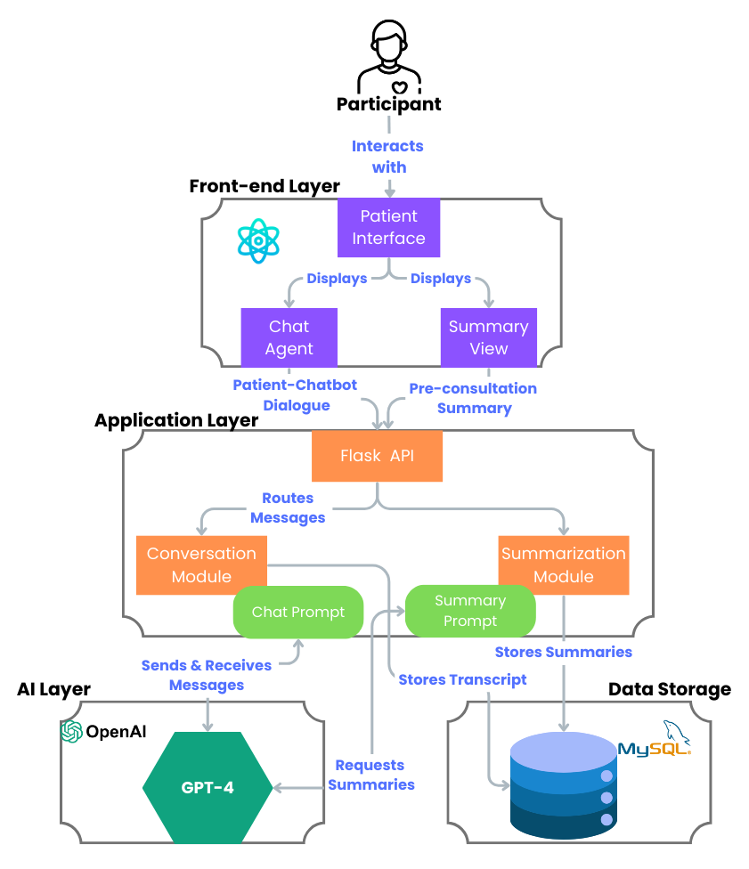

Generating Patient-Centered Narratives Using Conversational Pre-consultation Agents
In submission...
Context
Clinical pre-consultation offers a promising avenue for scaffolding patient-centered care by providing a space for patients to share relevant health information in advance. This process streamlines routine data collection, enabling patients and clinicians to prioritize more meaningful conversations during face-to-face consultations. Pre-consultation is typically conducted either through static questionnaires, which are scalable and cost-efficient but often lack flexibility and nuanced information quality, or by intake nurses, who offer a more engaging and accurate approach but are resource-intensive to train and deploy. Recent large language models (LLMs) have enabled the development of conversational agents that combine the strengths of both approaches, providing the potential for an adaptive, engaging, scalable, and high-quality information-gathering experience
Solution
In our formative study, we conducted a Wizard-of-Oz experiment in which medical residents simulated the process of generating pre-consultation summaries. This approach revealed that summaries authored by residents provided physicians with stronger context and anchoring, enabling more focused and efficient consultations.
Our design for the pre-consultation system is as follows: The agent consists of a chatbot interface and a summary interface. Using OpenAI's API, we developed the chatbot interface with GPT-4 to facilitate pre-consultation conversations. The conversation prompt was adapted from the one we had developed earlier and instructed the GPT instance to pose questions in a professional manner, ask appropriate follow-up questions, avoid double-barreled questions, and conduct a natural pre-consultation dialogue. For the summary interface, we incorporated insight from the formative study to prompt GPT-4 to generate a brief narrative summary of the patient's reason for visit, along with a structured table of relevant medical concerns. To guide the LLM's output, the prompt also included example summaries that were produced by the medical resident "wizards" earlier. During an early prototyping session with pilot participants, we observed that the summaries produced by GPT-4 could sometimes produce inconsistent output. To minimize potential inaccuracies, we then added an editing feature so patients can review and edit the summary to correct any changes if needed.
The system implementation involved setting up a back-end server using Flask and a MySQL database. This enabled the chat interaction through Python API calls from the front end, while also storing the conversations and generated summaries for future analysis. The front end was built using ReactJS and designed with a minimalist, user-friendly interface in mind to help patients stay focused on the intake process without unnecessary distractions.
Here is a link to the demo.
Findings
From the post-study survey, we found that the pre-consultation agent system was generally well received, with 86% of participants strongly agreeing that they would want to use it for future doctor appointments. Most participants enjoyed the conversation, found the interaction engaging, and felt that the chatbot demonstrated a reasonable understanding of their responses.
Our findings demonstrate that the pre-consultation system has the potential to help patients recall their history, structure their thoughts, and express their concerns more confidently during the appointment. It also enables physicians to better understand their patients and tailor the conversation toward a more focused and efficient discussion. Together, these benefits support a more patient-centered approach to care by fostering clearer communication, shared understanding, and greater preparedness on both sides of the clinical encounter.
Citation
Brenna Li, Anna Kirik, Liam Bakar, Jiaqi Guo, Khai Truong, Alex Mariakakis. Enhancing Patient-Centered Care Through Pre- Consultation Summaries: A Pathway to Improved Communication and Understanding - (In submission for CHI'26)